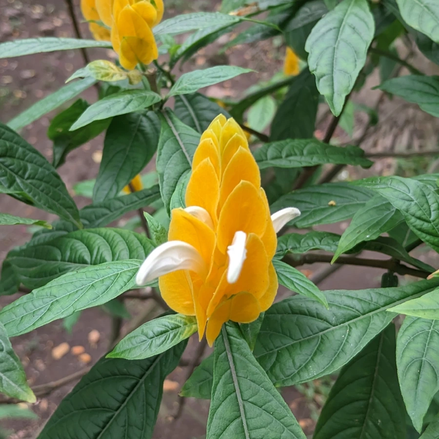

花卉与草本 · 植物界
金苞花 Pachystachys lutea

爵床科金苞花属常绿灌木，花序具金黄色叠瓦状苞片，白色花冠从苞片中伸出，形似金穗，是热带庭园的观花植物。
- 分类
- 门被子植物门纲木兰纲目唇形目科爵床科属金苞花属
- 栖息环境
- 秘鲁热带林缘，喜温暖湿润、阳光充足
- 地理分布
- 原产秘鲁；中国华南、西南及世界热带地区栽培
- 保护级别
- IUCN 暂无评估；栽培广泛，野生种群未受明显威胁
物种志
金苞花为常绿灌木，高 1–2 米，茎直立、多分枝。叶片卵形至披针形，长 8–15 厘米，对生，上面深绿色。穗状花序顶生，长 10–15 厘米，苞片金黄色、叠瓦状排列，四棱形，像一座金色的塔；花冠白色，二唇形，长 5 厘米，从苞片中伸出，花谢后苞片仍可观赏数周。
本种原产秘鲁，喜温暖湿润、阳光充足的环境，在中国华南、西南常作庭园花灌木与盆栽。它金黄色的苞片层层叠叠，白色花冠从中伸出，形似一根金色的麦穗，花期长、观赏价值高。金苞花不耐寒，北方需温室越冬；生长期需充足光照与水分，否则苞片颜色变淡。其花蜜丰富，能吸引蜂类与蝴蝶。
形态与习性
- 株高1–2 米，茎直立多分枝
- 花期5–10 月，苞片金黄色
- 花序长 10–15 厘米，四棱形金穗
- 光照喜光，每天需充足直射光
- 水分喜湿润，忌积水
- 土壤肥沃、排水良好的壤土
- 主要用途庭园花境、盆栽与切花
趣味知识
- 金苞花金黄色的是苞片，白色二唇形的小花才是真正的花。
- 它的花序呈四棱形，层层叠叠像一座金色的小塔。
- 金苞花原产秘鲁，是热带庭园中花期最长的灌木之一。
- 花谢后金黄色苞片仍能保持数周，因此观赏期比一般花卉长得多。